Overview
复习
- 操作系统
- 状态机的管理者
- 对象 + API
本次课回答的问题
- Q1: 状态机的状态是如何存储的？
- Q2: 更多的持久状态是如何存储的？
本次课主要内容
- 1-bit 的存储方式
- Volatile/non-volatile storage
状态机状态的存储
计算机需要存储 “当前状态”
机器指令模型 (Instruction Set Architecture) 只有 “两种” 状态
- 寄存器: rax, rbx, ..., cr3, ...
- 物理内存
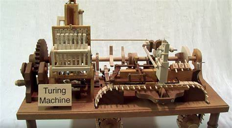
存储 “当前状态” 的需求
- 可以寻址
- 根据编号读写数据
- 访问速度尽可能快
- 甚至不惜规定
状态在掉电后丢失 - 机械玩具就没有这个烦恼
- 也因此有了 memory hierarchy
- 甚至不惜规定
“当前状态” 的存储

Delay line: 绳子
- 因为信号衰减，需要持续放大
Magnetic core: 磁铁
- segfault.c: “Segmentation fault (core dumped)”
- 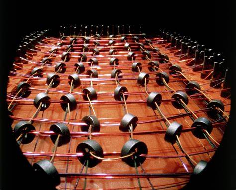 ulimit -c 可以修改 core file size (默认为 0)
/proc/sys/kernel/core_pattern指定了 core dump 文件格式
- Non-volatile memory!
SRAM/DRAM: Flip-Flop 和电容
- 今天的实现方案
开始持久化之旅
Persistence: “A firm or obstinate continuance in a course of action in spite of difficulty or opposition.”
除了 “当前状态”，我们希望更大、更多的数据能 “留下来” (并且被操作系统有效地管理起来)
持久化的第一课：持久存储介质
- 构成一切文件的基础
- 逻辑上是一个 bit/byte array
- 根据局部性原理，允许我们按 “大块” 读写
- 评价方法：价格、容量、速度、可靠性
- 再次见证人类文明的高光时刻！
存储介质：磁
“持久化” 可能没有想象的那么困难
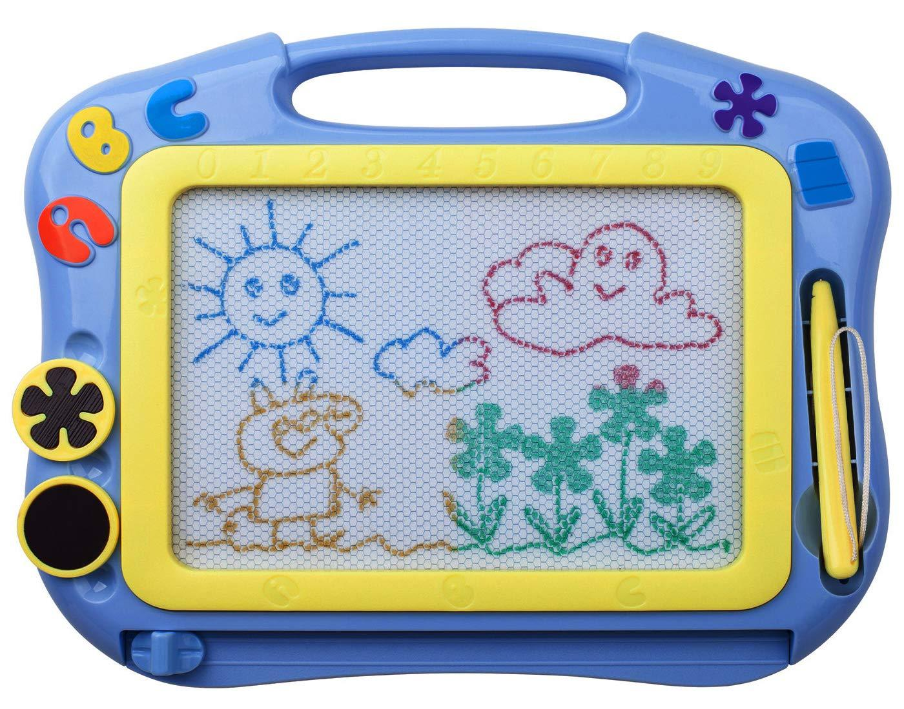
更进一步：用铁磁体的 “磁化方向” 表示 1-Bit 信息
- 读取：放大感应电流
- 写入：电磁铁磁化磁针
磁带 (Magnetic Tape, 1928)
1D 存储设备
- 把 Bits “卷起来”
- 纸带上均匀粘上铁磁性颗粒
- 只需要一个机械部件 (转动) 定位
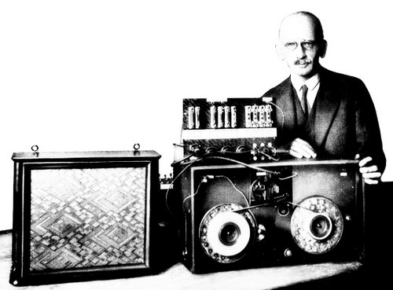
磁带：作为存储设备的分析
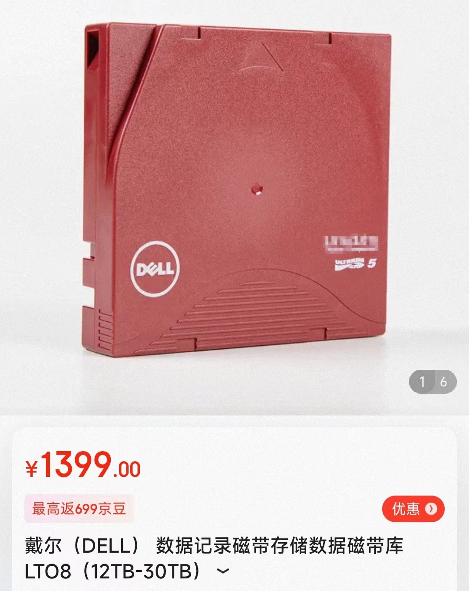
分析
- 价格
非常低 - 都是廉价的材料
- 容量
非常高
- 读写速度
- 顺序读取：
勉强 - 需要等待定位 - 随机读取：
几乎完全不行
- 顺序读取：
- 可靠性
存在机械部件 、需要保存的环境苛刻
今天的应用场景
- 冷数据的存档和备份
磁鼓 (Magnetic Drum, 1932)
1D → 1.5D (1D x n)
- 用旋转的二维平面存储数据
- 无法内卷，容量变小
- 读写延迟不会超过旋转周期
- 随机读写速度大幅提升
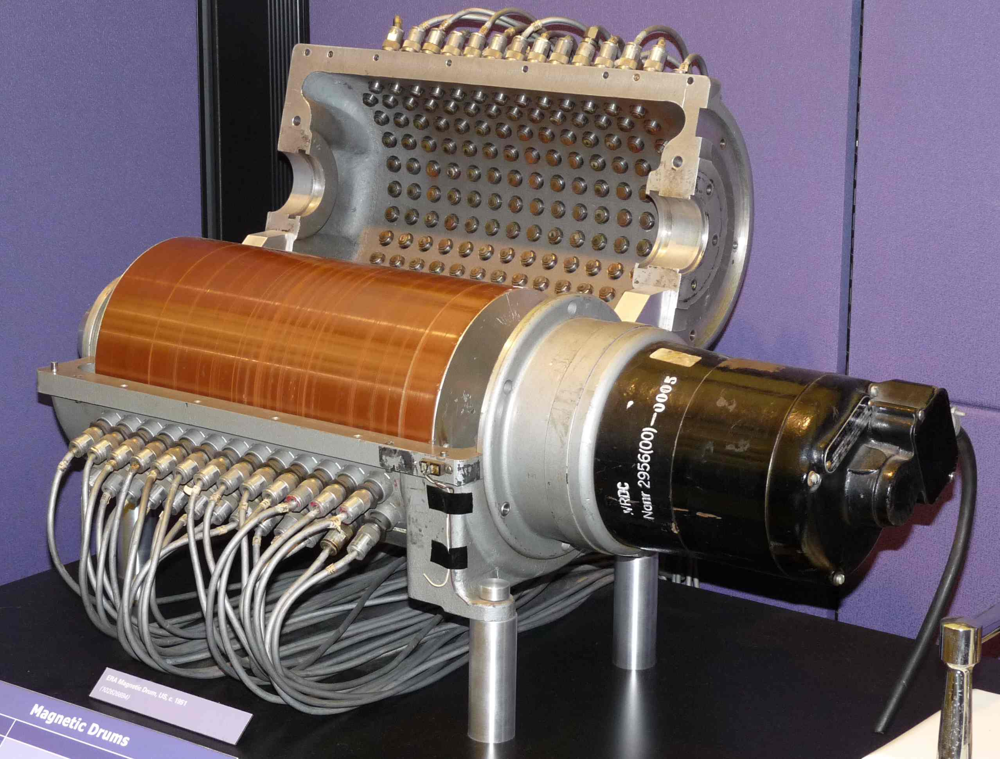
磁盘 (Hard Disk, 1956)
1D → 2.5D (2D x n)
- 在二维平面上放置许多磁带
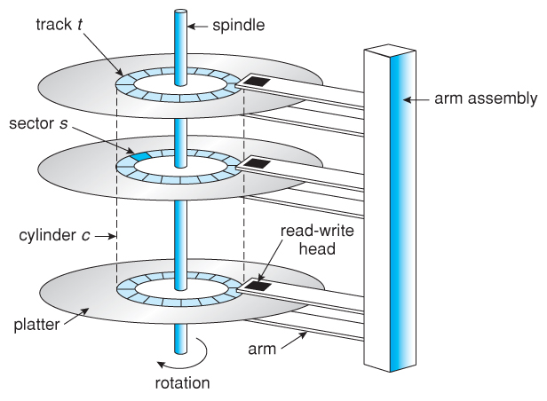
磁盘 (cont'd)
克服许多工程挑战

磁盘：作为存储设备的分析
分析
- 价格
低 - 密度越高，成本越低
- 容量
高 (2.5D) - 平面上可以有数万个磁道
- 读写速度
- 顺序读取：
较高 - 随机读取：
勉强
- 顺序读取：
- 可靠性
存在机械部件，磁头划伤盘片导致数据损坏
今天的应用场景
- 计算机系统的主力数据存储 (
海量数据：便宜才是王道)
磁盘：性能调优
为了读/写一个扇区
- 读写头需要到对应的磁道
- 7200rpm → 120rps → “寻道” 时间 8.3ms
- 转轴将盘片旋转到读写头的位置
- 读写头移动时间通常也需要几个 ms
通过缓存/调度等缓解
- 例如著名的 “电梯” 调度算法
- 现代 HDD 都有很好的 firmware 管理磁盘 I/O 调度
/sys/block/[dev]/queue[mq-deadline] none(读优先；但写也不至于饿死)
软盘 (Floppy Disk, 1971)
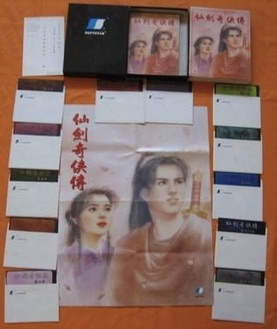
把读写头和盘片分开——实现数据移动
- 计算机上的软盘驱动器 (drive) + 可移动的盘片
- 8" (1971), 5.25" (1975), 3.5" (1981)
- 最初的软盘成本很低，就是个纸壳子
- 3.5 英寸软盘为了提高可靠性，已经是 “硬” 的了
- 8" (1971), 5.25" (1975), 3.5" (1981)
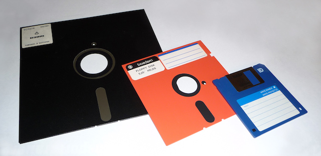
软盘：作为存储设备的分析
分析
- 价格
低 - 塑料、盘片和一些小材料
- 容量
低 (暴露的存储介质，密度受限)
- 读写速度
- 顺序/随机读取：
低
- 顺序/随机读取：
- 可靠性
低 (暴露的存储介质)
今天的应用场景
- 躺在博物馆供人参观
- 彻底被 USB Flash Disk 杀死
存储介质：坑
坑：天然容易 “阅读” 的数据存储

Compact Disk (CD, 1980)
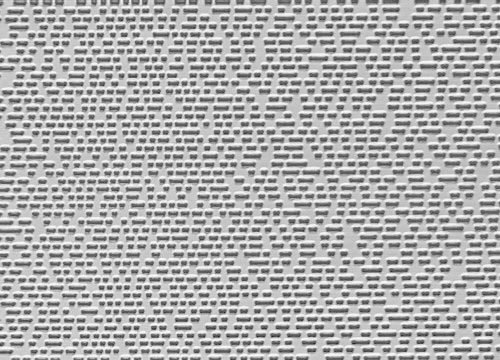
在反射平面 (1) 上挖上粗糙的坑 (0)
- 激光扫过表面，就能读出坑的信息来
- 飞利浦 (碟片) 和索尼 (数字音频) 发明
- ~700 MiB，在当时是非常巨大的容量

CD-RW
能否克服只读的限制？
- 方法 1
- 用激光器烧出一个坑来 (“刻盘”)
- 使用持久化数据结构 (append-only)
- 方法 2：改变材料的反光特性
- PCM (Phase-change Material)
- How do rewriteable CDs work?
挖坑的技术进展
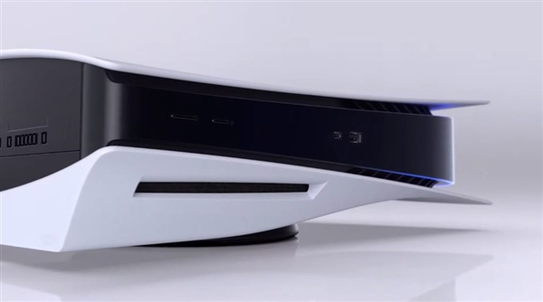
CD (740 MB)
- 780nm 红外激光
DVD (4.7 GB)
- 635nm 红色激光
Blue Ray (100 GB)
- 405nm 蓝紫色激光
光盘：作为存储设备的分析
分析
- 价格
很低 (而且很容易通过 “压盘” 复制)
- 容量
高
- 读写速度
顺序读取速度高；随机读取勉强 写入速度低 (挖坑容易填坑难)
- 可靠性
高
今天的应用场景
- 数字媒体的分发 (即将被互联网 “按需分发” 淘汰)
“挖坑”：不止是数据存储
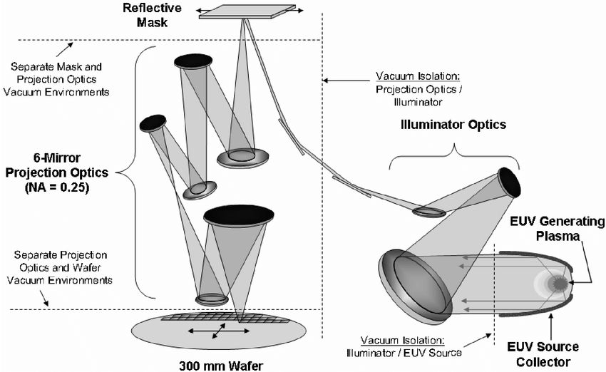
Finally, 电
Solid State Drive (1991)
之前的持久存储介质都有致命的缺陷
- 磁：机械部件导致 ms 级延迟
- 坑 (光): 一旦挖坑，填坑很困难 (CD 是只读的)
最后还得靠
- Flash Memory “闪存”
- Floating gate 的充电/放电实现 1-bit 信息的存储

Flash Memory: 几乎全是优点
分析
- 价格
低 (大规模集成电路，便宜)
- 容量
高 (3D 空间里每个 $(x, y, z)$ 都是一个 bit)
- 读写速度
高 (直接通过电路读写)- 不讲道理的特性：容量越大，速度越快 (电路级并行)
- 快到淘汰了旧的 SATA 接口标准 (NVMe)
- 可靠性
高 (没有机械部件，随便摔)
但有一个意想不到的
USB Flash Disk (1999)
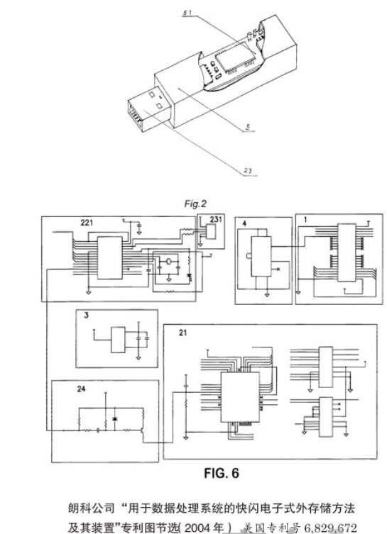
优盘容量大、速度快、相当便宜
- 很快就取代了软盘，成为了人手 $n$ 个的存储介质
- Compact Flash (CF, 1994)
- USB Flash Disk (1999, “朗科”)
放电 (erase) 做不到 100% 放干净
- 放电
数千/数万次 以后，就好像是 “充电” 状态了 - dead cell; “wear out”
- 必须解决这个问题 SSD 才能实用
NAND Wear-Out 的解决：软件定义磁盘
每一个 SSD 里都藏了一个完整的计算机系统
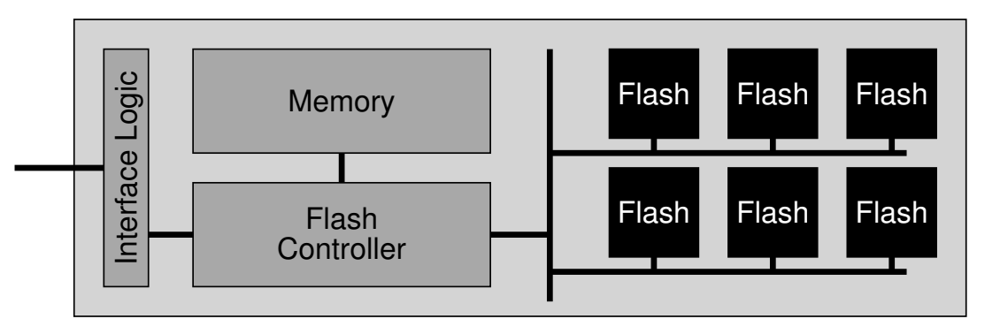
- FTL: Flash Translation Layer
- “Wear Leveling”: 软件管理那些可能出问题的 blocks
- 像是 managed runtime (with garbage collection)
- 请阅读教科书
优盘和 SSD 的区别
优盘, SD 卡, SSD 都是 NAND Flash
- 但软件/硬件系统的复杂程度不同，效率/寿命也不同
- 典型的 SSD
- CPU, on-chip RAM, 缓存, store buffer, 操作系统 ...
- 寿命: ~1 PiB 数据写入 (~1,000 年寿命) 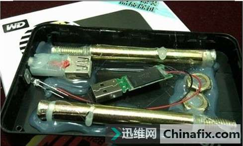
- SD 卡
- SDHC 标准未规定
- 黑心商家一定会偷工减料 (毕竟接口完全一样)
- 但良心厂家依然有 ARM 芯片
- SDHC 标准未规定
- 典型的 SSD
- × 宝 9.9 包邮的优盘，芯片一毛钱都能省……
FTL: 性能、可靠性、安全性的难题
大家可记得修电脑引发的血案？
- 首先，(快速) 格式化是没用的
- (M5 会告诉你这一点)
- 在你理解了 FTL 之后
- 即便格式化后写入数据 (不写满)
- 同一个 logic block 被覆盖，physical block 依然存储了数据 (copy-on-write)
- 需要文件系统加密
- 即便格式化后写入数据 (不写满)
另一个 memory system 相关的安全问题
- Row Hammer (TCAD'19)
- 更重的负载可能会 “干扰” 临近的 DRAM Cells
SSD 的可靠性：另一个故事
什么？硬件里的软件？
- 其实非常复杂：算法, cache; store buffer; ...
谁写出来的？那可得有 bug 啊！
- 让我们好好构造疯狂的 workloads，把它弄挂吧！
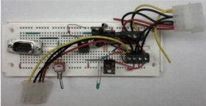
有趣的故事：结果
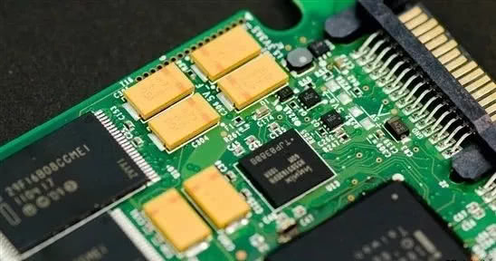
这篇 paper 促进了硬件厂商对 FTL 的大幅改进
- 在 2015 年之后出产的产品，已经几乎无法找到这样的问题了 (cool!)
| Device | Model | Year | Bug? |
|---|---|---|---|
| SSD#1, 10, 8, 9, 6, 2 | A | 2011 x 3, 2012 x 2, 2010 | Y |
| SSD#2 | B | 2010 | Y |
| SSD#3, 11, 12 | C | 2011 | Y |
| SSD#4, 13 | D | 2011 | - |
| SSD#5, 14, 7, 15 | E | 2009, 2011 x 2, 2012 | Y |
总结
总结
本次课回答的问题
- Q: 状态机的状态和持久的状态是如何存储的？
Take-away messages
- 1-Bit 信息的存储
- 磁 (磁带、磁盘)、坑 (光盘)、电 (Flash SSD)
- 构成性格各异的
存储设备
- 重新思考 “状态的存储”
- NVM 来了：主存的机器状态不会断电丢失
- 但寄存器/缓存依然是 volatile 的
- 计算机系统是否会经历彻底的 “重新设计”？
- NVM 来了：主存的机器状态不会断电丢失